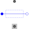

StrayLoadModel of stray load losses dependent on current and speed |

|
Information
This information is part of the Modelica Standard Library maintained by the Modelica Association.
Stray load losses are modeled similar to standards EN 60034-2 and IEEE 112, i.e., they are dependent on square of current, but without scaling them to zero at no-load current.
For an estimation of dependency on varying angular velocity see:
W. Lang, Über die Bemessung verlustarmer Asynchronmotoren mit Käfigläufer für Pulsumrichterspeisung,
Doctoral Thesis, Technical University of Vienna, 1984.
The stray load losses are modeled such way that they do not cause a voltage drop in the electric circuit. Instead, the dissipated losses are considered through an equivalent braking torque at the shaft.
The stray load loss torque is
tau = PRef/wRef * (i/IRef)^2 * (w/wRef)^power_w
where i is the current of the machine and w is the actual angular velocity.
The dependency of the stray load torque on the angular velocity is modeled by the exponent power_w.
See also
If it is desired to neglect stray load losses, set strayLoadParameters.PRef = 0 (this is the default).
Parameters (3)
| m |
Value: 3 Type: Integer Description: Number of phases |
|---|---|
| useHeatPort |
Value: false Type: Boolean Description: = true, if heatPort is enabled |
| strayLoadParameters |
Value: Type: StrayLoadParameters Description: Stray load loss parameters |
Connectors (5)
| plug_p |
Type: PositivePlug Description: Positive polyphase electrical plug with m pins |
|
|---|---|---|
| plug_n |
Type: NegativePlug Description: Negative polyphase electrical plug with m pins |
|
| flange |
Type: Flange_a Description: Shaft end |
|
| support |
Type: Flange_a Description: Housing and support |
|
| heatPort |
Type: HeatPort_a Description: Optional port to which dissipated losses are transported in form of heat |
Components (1)
| strayLoadParameters |
Type: StrayLoadParameters Description: Stray load loss parameters |
|---|
Used in Components (2)
|
Modelica.Electrical.Machines.Interfaces Partial model for induction machine |
|
|
Modelica.Magnetic.FundamentalWave.BaseClasses Base model of machines |